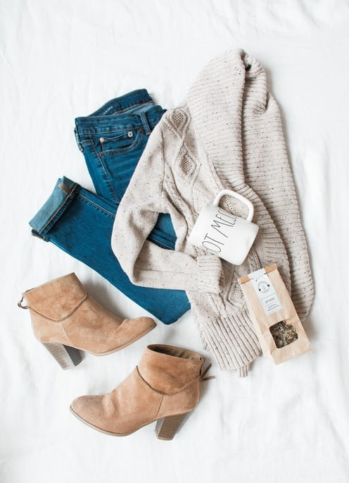

EXCITING FOOD TO EAT IN LONDON
Traditional British foods that you need to try when you are in London,
including a few places where you can taste them.
1. FISH & CHIPS
There’s nothing that says ‘British Food’ like Fish & Chips. Known the world over, this traditional British dish is on the top of any foodie list for visitors to London and the U.K. Although fish & chips are best eaten on the seaside, it is possible to get great fish & chips in London.2. SUNDAY ROAST WITH YORKSHIRE PUDDING
Sunday roast is a true British classic. Traditionally this meal is eaten any time from noon to 5 pm (17:00) on Sundays. Although you can get Sunday roast with turkey, beef, pork, chicken, lamb and veggie options – it’s important to always make sure you get your Yorkshire pudding!3. PIE and MASH
Pie and Mash have come a long way from simple steak and kidney or pork pies. Today there are a whole plethora of pie types to try! A classic comfort food, pie served with a pile of creamy mashed potatoes and lashings of gravy is a real British treat!4. COCKLES
Oftentimes reserved for the more adventurous eaters, cockles are a small type of clam, and are traditionally associated with London’s East End where they were a cheap, staple food for decades. Today cockles can be found in grocery stores, but also in some of London’s tastiest markets!5. BEEF WELLINGTON
Perhaps the item with the most British name on the list, beef wellington is made up of filet steak, oftentimes covered with pate, which is then wrapped in puff pastry and cooked. Moorish, flaky, and filling, beef wellington is a standard British classic, despite the fact it is now believed that the dish was NOT named after the Duke of Wellington, but instead after the town of Wellington, New Zealand.
WHAT TO WEAR IN LONDON TO AVOID LOOKING LIKE A TOURIST
London is calling, and she’s trying to tell you that she’s not like the others. She can wear a killer fascinator to high tea in Chelsea and rock light-up platforms to a show in Brixton in the same day. Oh, and she never forgets her umbrella.
AUTUMN WEAR
It’s the time of the year to start layering until summer comes again, so ladies, jeans and button down top or a dress with leggings, accompanied with a sweater and light jacket is a wise outfit. Gents, it’s time to rock the sweater over a button down with a pair of fitted jeans or trousers.WINTER WEAR
ladies and gents, layers are our friend once again. It’s usually a safe choice to have an insulated coat with gloves and a hat at the ready (temperatures sometimes fluctuate pretty radically throughout the day). A sweater with a blouse or shirt underneath with some fitted trousers should keep you cozy and give you something to shed in case it’s too toasty at the local pub.SUMMER WEAR
London summers can be absolutely scorching. At the same time, everyone will be taking advantage of the heat to wear as little as possible, given that the majority of the year is spent layering. Ladies – colorful summer dresses, hats, shorts, and blouses will likely be on show especially if you’re lounging around the parks. Guys, a button-down shirt and some pastel shorts would be a typical summer outfit for the British lad.SPRING WEAR
When it comes to spring, the last thing you ever want to do is think that it will be a day without rain. Ergo, make it your rule to always carry your raincoat or umbrella with you no matter how sunny it is in the morning. Towards April and May, ladies can start thinking about dresses again (accompanied with a sweater, depending on how cold it gets in the evenings) while Men, you can likely get away with a short sleeved shirt, a sweatshirt in hand, and lighter trousers.